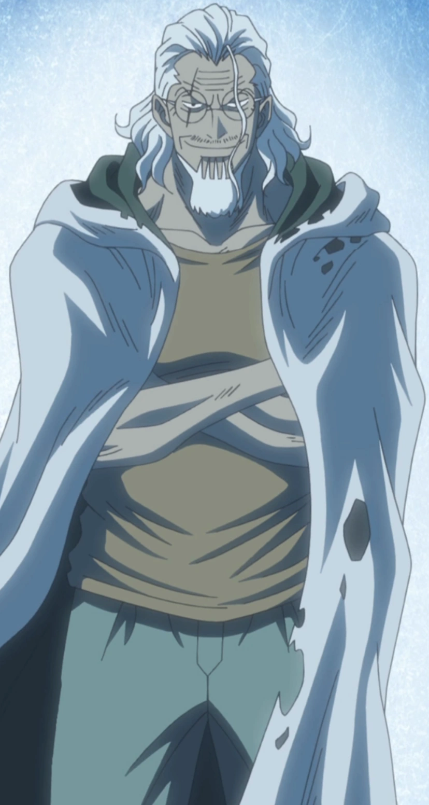

Silvers Rayleigh, also known as the "Dark King", is an extremely powerful and famous retired pirate who formerly served as the first mate of the legendary Roger Pirates, being known as the "Right Hand of the Pirate King". He is one of the major figures, along with Whitebeard, Shiki, Monkey D. Garp, Sengoku, Tsuru and Kong from the times when Gol D. Roger, the "Pirate King", was still alive.